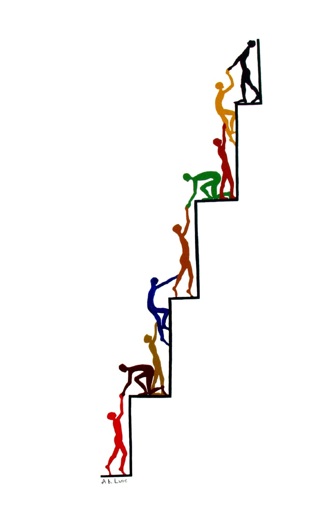

ABOUT US AND OUR STORY
We are all business that is willing to provide aid to young
black South African entrepreneurs who want to grow in the business
world while also developing or forming a strong social media apprearance and exposing themselves to more greater
opportunities and skills that will help them succeed.
The idea of this website came about when we saw the need to help people who have goals and
dreams they want to achieve but lacked the needed resources to make those dreams come true.
It is a known fact that the most talented people we know now are from South Africa ,
especially in small towns and this goes to show that anyone can be anything as long
as they put their minds into it and put the needed work. The website thrives in creativity ,
innovative ideas and growth because we aim at assissting anyone who wants more for themsleves
and are willing to take calculated risks to achieve
their goals.
MISSION
Many young entrepreneurs want to grow their personal brands, businesses, or
creative careers but lack exposure and guidance. Creators, entrepreneurs, photographers,
videographers, and designers have the potential to grow their businesses but because there
are limited resources that could aid in supporting them. The purpose of this platform is to
identify such individuals, analyse their digital presence, and provide strategic guidance to
improve visibility, structure, and professional opportunities. The website will then function
both as a mentoring site and as a showcase for entrepreneurs and creators, teaching them
how to present themselves effectively in the digital space.
